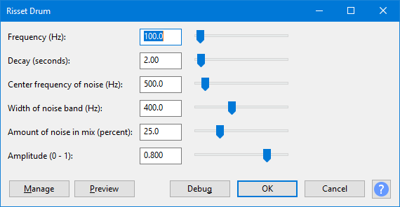

Risset Drum
- Accessed by:
- 
{kind=link}
Frequency (Hz)
The pitch of the drum note expressed in Hz. This tunes the "fundamental frequency" or "base note" of the sound.
Decay (seconds)
Determines the length of the drum sound. Longer sounds can sound similar to a gong.
Center frequency of noise (Hz)
The center frequency of the band-pass filter that is applied to the noise. Higher frequencies can sound as if small cymbals are vibrating with the drum stroke.
Width of noise band (Hz)
The minimum width of the band-pass filter that is applied to the noise. Higher values can increase the impression of a gong sound.
Amount of noise in mix (percent)
The amount of noise in the drum sound as a percentage of the mix. Values near maximum can sound like a gun shot if other controls are left at default values.
Amplitude (0-1)
The peak amplitude of the generated sound.
Buttons
Clicking on the command buttons give the following results:
- gives a dropdown menu enabling you to manage presets for the tool and to see some detail about the tool. For details see Manage presets.
- plays a short preview of what the audio would sound like if the effect is applied with the current settings, without making actual changes to the audio. The length of preview is determined by your setting in , the default setting is 6 seconds.
- applies the effect to the selected audio with the current effect settings.
- aborts the effect and leaves the audio unchanged.
 brings you to the appropriate page in the Manual, this page.
brings you to the appropriate page in the Manual, this page.